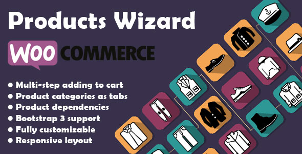
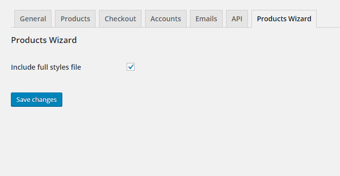
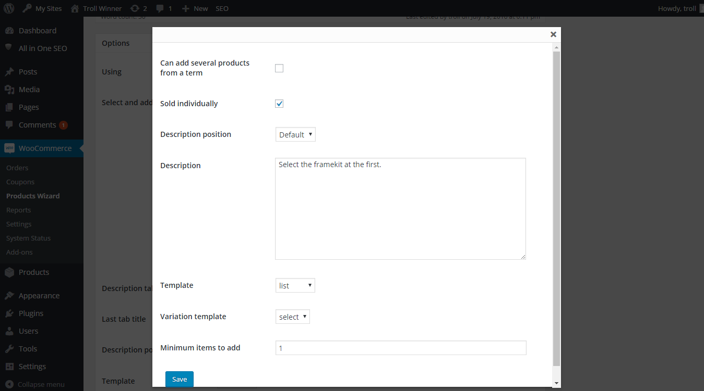

Created: 08/07/2015
By: troll_winner
Email: troll_winner@mail.ru
Thank you for purchasing my plugin. If you have any questions that are beyond the scope of this help file, please feel free to email troll_winner@mail.ru. Thanks so much!
The main task of this plugin is created form, which step by step helps customers to choose a kit from all products and categories, while your products have specific features. For example, if you sell bicycle details some of them from category "frame" do not combine with some details of category "wheels". So after the customer has chosen some appropriate frame you can make some products of category "wheels" unavailable to choose on the second step. In the end customer get your own kit of products, which meets some technical or other requirements.
"Include full styles file" - enable it if your theme doesn't based on the bootstrap 3 framework. It will include some base required css for a right view.
Use post content as a description of the first tab.
The "Description tab title" setting sets the description tabs nav item text.
The "Last tab title" setting sets the last tabs nav item text.
The "Description position" setting change category description position globally.
The "Template" setting change category template globally.
The "Enable description tab" setting enables/disable the first tab with description text.
The "Enable next-button" setting enables/disable the submit button in the controls.
The "Enable to-results-button" setting enables/disable the button which allows to skip all steps from the active.
The "Enable skip-button" setting enables/disable the button which allows to skip the active step.
The "Enable back-button" setting enables/disable the button which allows to move backward from the active step.
The "Enable reset-button" setting enables/disable the button which allows clear current cart and move to the first tab.
Select and add product categories you need and change its settings.
The "Can add several products from a term" setting allows users to add more than one product of single term.
The "Sold individually" setting enables/disable product quantity input.
The "Description position" setting change description text position.
The "Description" setting helps add the text on the current tab.
The "Template" setting change layout of products in current tab. The list is formed of the php-files in the "plugin directory/views/form" and "theme directory/woocommerce-products-wizard/form" folders.
The "Variation template" setting change the layout of the variable products options list.
The "Minimum items to add" setting indicates how many products must be selected to move on the next step.
By dependencies form you can set the product dependencies from the other products or product variations. Each new line of the form is mean "OR" dependency.
Two or more dependencies on the one line are meant "AND" dependency. This is means the product will be available if all of these products have been chosen earlier.
The "variation view" setting change layout of the variable product options list above category settings.
You can also set dependencies of the each variation of a variable product.
To call the wizard use [woocommerce-products-wizard] shortcode with the id attribute in the page content. You can find it on the wizard edit page on the string "Using".
Also you can use the "WCProdWiz()->getTemplatePart('app', ['id' => %POST_ID%]);" string in the php-file.
You can send the attributes as string in the shortcode or as an associative array in the method arguments.
Shortcode example: "[woocommerce-products-wizard id='13']".
Class usage example: "WCProdWiz()->getTemplatePart('app', ['id' => 13])".
troll_winner